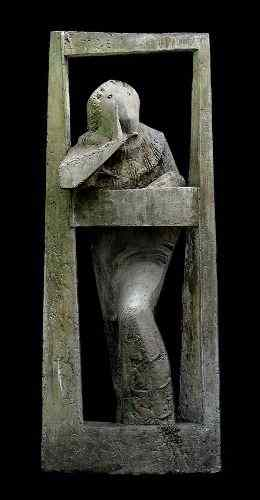
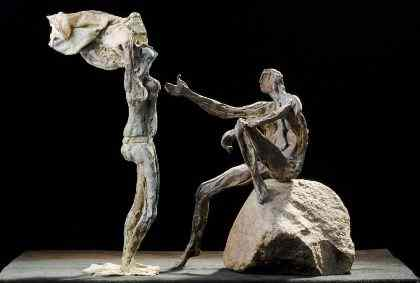
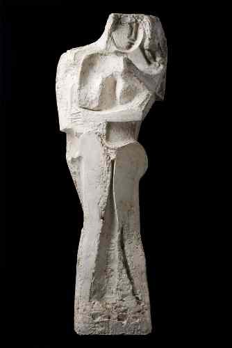
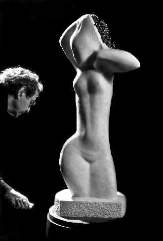
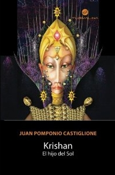
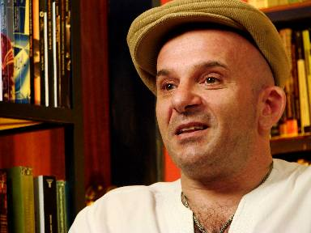

Desde
el corazón
Desde
el corazón
Tenemos el placer de presentar a Antonio Francisco Pujia, artista plástico radicado en Argentina,
que ha sido entrevistado por Juan Pomponio Castiglione, autor de este apartado.
Cabe señalar a manera de introducción, que Antonio nace el 11 de Junio de 1929 en un pueblo del sur de Italia llamado Polia.. Desde la infancia denota su interés por las formas ya que modela sus propios juguetes con arcilla que obtiene de las orillas de un arroyo. Emigra a Argentina (Buenos Aires) con su familia en 1937, comenzando aquí los estudios primarios con dificultad, puesto que padece de miopía; además del obstáculo que implica el hablar un idioma distinto. Estos inconvenientes animan su vocación futura, al motivarlo en el dibujo de los elementos de la realidad de significancia, que le llaman poderosamente la atención. Ingresa en la Escuela Manuel Belgrano, donde se denotan sus dotes artísticas y aplicación al estudio, al tiempo que trabaja en talleres relacionados a la práctica de la escultura (moldería en yeso, etc), lo que le permite obtener el título de Profesor Nacional de Dibujo en la Escuela Nacional de Bellas Artes Prilidiano Pueyrredón y el de Profesor de Escultura en la Escuela Superior de Bellas Artes Ernesto de la Carcova. Este período de estudios abarca desde 1943 hasta 1954 y tiene como profesores a artistas de la talla de Troiano Troiani, Alfredo Bigatti, Alberto Lagos y Jose Fioravanti, con los cuales también trabaja como ayudante en sus talleres; al tiempo que se desempeña como ayudante en el taller de Rogelio Yrurtia. Tiempo después, y a modo de sentido homenaje, bautiza con sus nombres los patios de su propia escuela-taller. Se dedica con creciente Pregunta: ¿Cómo recuerda aquel niño que modelaba arcilla a orillas de un arroyo? ¿Cuáles son las imágenes más nítidas de aquella época? Mi recuerdo de aquellas épocas está fresco y vivo, cada vez que huelo la humedad de la arcilla. Mientras cierro los ojos puedo estar al lado del arroyo de mi pueblo, puedo oírlo… Cuando estudiaba en la Escuela Manuel Belgrano, tuve varias clases de dibujo y pintura antes de llegar a las de escultura, cuando me dieron arcilla por primera vez en la escuela la olí e inmediatamente me sentí en la orilla del arroyo de mi pueblo, en ese momento de emoción profunda supe que modelar con este material era mi camin; que ya no me separaría jamás de ella. Pregunta: El maestro que tuvo en la escuela primaria ¿Fue uno de los guías que le indicó el camino de Bellas Artes? El Sr. Ricardo Furlong fue mi Maestro de 7º grado, el nos reunió antes de terminar el curso y nos fue diciendo lo que pensaba acerca de proseguir nuestros estudios. A mí en particular, me recomendó estudiar “Bellas Artes”. Estas dos palabras me sonaron a gloria; no sabía qué era lo que el Maestro me estaba recomendand;, pero sí, eran Bellas… me atraían irremediablemente. Pregunta: ¿Cómo transcurrió esa época de estudio hasta recibirse de Profesor Nacional de Dibujo en la Escuela Nacional de Bellas Artes Prilidiano Pueyrredón y el de Profesor de Escultura en la Escuela Superior de Bellas Artes Ernesto de la Carcova? Entre los estudios y el trabajo, y dado que yo era el segundo hermano varón en una familia de 4 hijos, desde niño tenía muchas responsabilidades. Ya, desde pequeño cuidaba de mis hermanos menores y de los animales que mis Padres tenían: algunos conejos, gallinas… una cabra que llevaba a pastar en los interminables espacios baldíos que abundaban donde vivíamos, cerca del arroyo Maldonado mucho antes de que lo entubaran… en el barrio de Versailles. Luego, ya de jovencito trabajaba para llevar un sueldo más a mi familia, que era muy humilde; de este modo tuve la incalculable fortuna de trabajar como ayudante de los más grandes Maestros del arte argentino.
|
 "La mañana"
|

"Pareja de bañistas"
|
En 1956 el entonces Director Técnico del Teatro Colón, Hector Basaldua,
decide dotar al Teatro de un taller de escultura escenográfica para lo
cual organiza un concurso, el cual es ganado por Antonio Pujia; quien se Pregunta: Al despertarse esa fascinación por la danza allá en el Teatro Colón y forjar amistad con Norma Fontela, José Neglia y los bailarines del cuerpo estable ¿Cómo nace su captación del movimiento en una escultura de algo tan fugaz como la danza? Nace de la imperiosa necesidad de registrar lo hermoso, de la maravillosa posibilidad que tenía de dibujar esos hermosísimos cuerpos que hacían los más bellos movimientos que yo jamás habia visto! Pregunta: ¿Cómo reaccionó aquel artista tan joven al recibir merecidamente los premios más importantes del país? Con muchísima sorpresa nunca imaginé que mi trabajo pudiese ser premiado. Es más, los trabajos que hice llegar a los primaros salones de los que participé, los envié debido a la insistencia de mis Maestros. Sin ese empujón nunca lo hubiese hecho.
|
En 1965, motivado por esta secuencia de premios, decide realizar su
primer muestra individual en la histórica galería Witcomb, una de lasprimeras galerías de Bs .As. la cual había albergado muestras de los más
importantes artistas del país y del extranjero. Esta muestra marca un
hito en su carrera, pues, además de ser un verdadero suceso de público y ventas; fue una muestra donde expuso una gran cantidad de obras fundidas en bronce, cosa que hasta entonces no había podido hacer. Por otro lado, la apuesta fue grande; la muestra fue costeada íntegramente con sus ahorros; tónica ésta, que continuaría durante toda su vida como única forma de mantener independencia e integridad con respecto a lo que desea expresar. Años después, en el 2000, las mismas esculturas expuestas en el Museo E. Sivori, provocarían sensaciones análogas a aquella época. Es tan grande la importancia que Pujia confiere a esta serie de esculturas que, aún hoy en día, la serie completa y original es parte de su colección privada.
|
 "La columna de la vida" |
Durante el 2008 realiza una exposición/homenaje al Bicentenario del Teatro Colón. Pregunta :Cuando decide realizar la primera muestra de su trabajo en la histórica galería Witcomb en el año 1965 ¿Fue difícil la decisión de costearse la exposición con sus ahorros? No fue tan dificil en lo economico; yo venía de ganar varios premios y además trabajaba en el Teatro Colón y en las escuelas dando clases. Además, venía de ganar el Premio Palanza. Este premio, se exibía en la Galería Witcomb entonce el Sr. Lires (uno de los dueños) me conocía y me hizo un muy buen precio y además no me cobró comisión por ventas, a modo de bienvenida! La mayor dificultad que tuve en ese momento fue psicológica; tenía bastante miedo de que mi trabajo no le gustase al público, por suerte mis temores eran infundados! Pregunta:¿Es el salto que debe dar todo artista que cree en su obra, más allá de lo que pueda ocurrir en la presentación de sus trabajos? |
Pregunta¿Podría mostrarnos las sensaciones o cualidades que siente cuando trabaja con los diferentes materiales? ¿Qué le transmiten el oro, la plata, el bronce, el mármol u otro material? ¿Tiene alguno preferido? A mí, me gusta sobremanera modelar con arcilla; también con cera. La talla, igualmente, me atrae mucho. En este momento estoy terminando una obra que combina mármol con bronce… Mis materiales preferidos son los materiales nobles de la escultura: el bronce, la piedra… Pregunta: Usted es un artista comprometido socialmente que ve y absorbe las imágenes de nuestra sociedad. En su momento fue el impacto generado por la exposición de aquella muestra donde nos enseñó la desolación del continente africano destrozado por la miseria, luego la muestra “Sin pan y sin Trabajo”; entre otras tantas exposiciones realizadas en su vasta trayectoria ¿Cuál sería el tema central de una muestra que Antonio Pujía nos presentaría en nuestros días? Lamentablemente podría volver a presentar Biafra? y “Sin pan y sin trabajo”… Pregunta:¿Qué espacio ocupa en su vida el tema de la docencia? Un lugar muy grande. Piense en que di clases durante mas de 30 años en la Belgrano, la Pueyrredón y la Carcova; además di clases en mi propia escuela taller y aun hoy, a mis más de 80 años, sigo dando clases en mi taller y también, clases y charlas gratuitas en diferentes escuelas, incluso en otros espacios más! Pregunta:¿Cuáles son los proyectos más cercanos? Los mismos de siempre, trabajar en el taller de Lunes a Viernes, de 09:00 a 12:00 y de 14:30 a 19:00 hs. Pregunta: Y por último ¿Le gustaría dejarnos un mensaje a nivel artístico, humano? ¿Qué nos diría Antonio Pujio a nosotros como sociedad? No es una frase de mi autoría… pero creo que es un buen consejo, ayer y siempre: ¡Amaos los unos a los otros! |
 Antonio, con El amor de Amadeo con uvas
|
Distinciones
1997 Premio "Estatuilla Tango", República de San Telmo.
1992 Premio "Recorrido Dorado" S.D.D.R.A.
1990 Nombrado "Ciudadano Ilustre de la Ciudad de Buenos Aires" por el H. C. D.
1984 Diploma de Honor otorgado por la Sociedad Argentina Protectora de Animales, con motivo de la realización de la medalla del "Jockey Club".
1983 Premio "Palmas Joaquín V. Gonzalez", Gobierno provincia de La Rioja.
1982 Ganador Concurso Creación y Ejecución para la Medalla Conmemorativa del 1er. Centenario Jockey Club de Buenos Aires.
1982 Nombramiento de Cavalieri dell'Ordine all Merito della República Italiana.
1982 Fundación Konex, Premio destinado a las mejores figuras de las Artes Visuales Argentinas.
1981 Premio Adquisición Gobierno de Santa Fe LVIII Salón Anual de Artes Plásticas. Museo de Bellas Artes, Santa Fe.
1980 Premio Revista "Salimos".
1974 Rotary Club de Buenos Aires, Ateneo Rotario, Laurel de Plata.
1972 Primer Premio Salón Nacional de Tucumán.
1972 Premio Especial Medalla de Oro Salón IPCLAR, Provincia de Santa Fe.
1971 Premio a la mejor muestra, Fondo Nacional de las Artes, otorgado por la muestra Biafra? de 1971 en la Galería Esmeralda.
1970 Premio Dirección de Turismo, Salón anual de Tucumán.
1970 Gran Premio I Bienal de Escultura, Municipalidad de Quilmes.
1966 Primer Premio Salón de Artes Plásticas de Campana, Provincia de Buenos Aires.
1964 Premio (Apartado Medalla) Salón Nacional. Distinciones
1964 Ganador Premio Fondo Nacional de las Artes "Augusto Palanza".
1962 Primer Premio Salón S.A.A.P.
1962 Premio Medalla de Oro, Salón Anual de Tucumán.
1961 Invitado a participar en la II Bienal Artistas Jóvenes en París. Distinciones
1961 Premio Único, 1er. Concurso Bienal Alberto Lagos. Distinciones
1961 Primer Premio XXIII Salón de La Plata. Distinciones
1960 Premio Boceto, Monumento a D.F. Sarmiento, Municipalidad de Avellaneda.
1960 Gran Premio de Honor Salón Nacional de Artes Plásticas. Distinciones
1960 Tercer Premio Sección Arte Histórico, Salón Nacional.
1959 Gran Premio Salón Municipal Manuel Belgrano. Distinciones
1959 Primer Premio Salón Nacional de Artes Plásticas. Distinciones
1959 Gran Premio Salón de Artes Plásticas de Rosario, Santa Fe. Distinciones
1958 Tercer Premio Salón Nacional de Artes Plásticas. Distinciones
1957 Segundo Premio Salón Municipal Manuel Belgrano.
1956 Premio Rogelio Yrurtia Salón Anual Provincia de Santa Fe. Distinciones
1955 Tercer Premio Salón Municipal Manuel Belgrano. Distinciones
1951 Premio de Honor Primer Salón de Estudiantes de Artes Plásticas Distinciones
1950 Primer premio del Salón Anual de MEEBA. Distinciones
1949 Segundo Premio Salón Anual MEEBA
"Corazón mensajero" Pintura en acrílico de Graciela María Casartelli. |
Autor: Juan Pomponio (Argentina) |
Algunos anteriores
 PEDAGOGÍA DEL SILENCIO
PEDAGOGÍA DEL SILENCIO
 ¿La humanidad tiene ética?
¿La humanidad tiene ética?
¿Qué es la libertad?
¿Podemos hablar de libertad incluso cuando nuestras propias mentes están limitadas y fragmentadas
por diversas ideologías y religiones? ¿La humanidad tiene ética?
Soy nadie ante los espejos de la memoria, mucho menos para ponerme a hablar de la ética.
Me repliego y desde mi silencio, trazo éstas letras para mi hermano poeta.
Nadie puede censurarnos, mucho menos hacernos callar, ni siquiera con la muerte.
La palabra trasciende las fronteras de los tiempos.
Cuando escribo...
Cuando escribo no pienso y cuando pienso no escribo, si me pongo a pensar se atascan las palabras pues tendrían que pasar por el tamiz
de todos los condicionamientos que existen en la memoria, entonces dejo que las letras salgan como lenguas de un fuego invisible que va
trazando el papel imaginario que existe sobre la pantalla de mi computadora.
Antes escribía con la pureza de la tinta manchando mis dedos de azul, ahora lo hago manchado mis dedos de nada.
El resultado ¿será el mismo?
No me preocupa la forma de hacerlo, sólo es una realidad que mueve mi alma hacia diferentes lugares.
Recuerdo cuando estaba a orillas del mar, perdido en una aldea de Venezuela, el rugido de las olas me alcanzaba el susurro de las palabras
y en aquél momento escribía en mi cuaderno con una pluma que ya no existe, sólo en mi corazón de poeta.
Hoy escribo así, con teclas que se
mueven al ritmo de mi alma y buscan el sendero de la vida para no dejar nada.
Sólo escribir por el simple hecho de hacerlo, por el simple hecho del placer, por el simple acto de ser.
Krishan, el Hijo del Sol
Nació Krishan, el Hijo del Sol. Llegó al mundo de la mano de Juan Pomponio Castiglione, quien -siguiendo designios espirituales- se sentó a escribir esta historia y no se levantó hasta
poner el punto final.
Krishan, el Hijo del Sol no es un libro de autoayuda ni un libro de espiritualidad tal como los conocemos: es una historia, bella, profunda, rica, que nos sumerge en un mundo de
fantasías y nos permite crear mentalmente nuestra propia película.
 |
www.amazon.com
Aquella tarde de sol, Krishan caminaba por el viejo puente de hierro que atravesaba el caudaloso río Tahal. Al llegar al final pudo ver el halo vaporoso del Portal de los Hombres Despiertos. Se le presentaba como una claridad diluida. Advirtió que en ese instante la imagen monótona... |
|---|
Krishan, el Hijo del Sol es un libro visual, plasmado de imágenes, pero por sobre todo, de frases que nos inundarán el alma y nos regalarán herramientas para crecer.
En cada capítulo, el lector sentirá que un mensaje le es entregado. Se verá reflejado en algún personaje, alguna ciudad o alguna situación. Se pondrá las ropas de Krishan y viajará
junto
a él en el mágico recorrido que el Destino le tiene preparado, para mostrarle un mundo más grande que el que conocemos y para que nuestro protagonista le abra los ojos a los otros seres,
guiándolos al mundo infinito del ser interior.
Krishan, el Hijo del Sol no tiene desperdicio, no tiene grietas, no tiene definición.
Krishan, el Hijo del Sol llegó para que todos lo conozcan. Llegó para quedarse en cada lector.
Krishan, el Hijo del Sol
“Aquella tarde de sol, Krishan caminaba por el viejo puente de hierro que atravesaba el caudaloso río Tahal. Al llegar al final pudo ver el halo vaporoso del Portal de los Hombres
Despiertos. Se le presentaba como una claridad diluida. Advirtió que en ese instante la imagen monótona y cotidiana de las cosas del mundo se distorsionaba.
Al ingresar, sintió que su cuerpo era más liviano. Avanzaba con una sutileza que nunca había experimentado. Empezaron a llegarle sensaciones extrañas pero a la vez
reconocibles desde su espíritu. Sentía una inquietud agradable. Supo que no se trataba de un sueño, que le era posible cultivar la pureza de sus sentidos, ampliarlos hasta llegar al
verdadero contacto con la vida, despojando los velos manchados que vienen siendo impuestos desde el principio de las cosas. De pronto se detuvo frente a una flor,
amarilla, de pétalos pequeños. Desprovisto de la Idea, proceso característico de quienes ingresan al portal por primera vez, Krishan sólo sabía que estaba frente a una porción
del misterio que le otorgaría una belleza inédita hasta que llegó a hacerse insoportable. Lloró”.
Info del autor y más en www.krishanelhijodelsol.com
Lanzamiento editorial. Krishan, el Hijo del Sol- 363 páginas – Editorial Turmalina
facebook.com/juan.pomponio
twitter.com/juanpomponio
*SOBRE EL ESCRITORIO
Escribo desde la ignorancia total. No sé absolutamente nada, sólo conozco el significado de las letras para poder armar las palabras que redactaré.
La noche se encuentra cargada de lluvia, en el aire puede percibirse la densa humedad. Mis sentidos se agudizan. El gallo del vecino siempre canta cuando quiere.
El motor de la heladera se ha puesto en marcha y ronronea como un gato blanco de ojos azules. Una palabra viene en la quietud, es la belleza de la Realidad. Silencio.
Los pulmones respiran apasionados y escribo suspendido como en un hueco del tiempo. Mis brazos se mueven junto con mis dedos que danzan airados sobre el teclado.
Alguien está leyendo esta historia desde algún lugar del mundo. ¡Magia! Las letras fluyen recibiendo órdenes del cerebro para ser agrupadas en formato de mensaje,
así mi mente se expresa hablando por intermedio de las palabras para que puedan ser asimiladas y comprendidas por otra mente, en este caso la suya.
Todo es un misterio y todo es mental porque nuestras funciones brotan desde el cerebro.
Ahora me pregunto:
¿El cerebro es un instrumento de la mente? ¿Quién es el que da la orden para que mis manos se muevan de determinada manera?
¿De dónde viene esa voz que me indica todo lo que tengo que hacer? ¿La orden proviene desde adentro del cerebro? ¿La mente existe desde afuera?
Esa realidad es tan poderosa que cada uno tiene que descubrirla, explorar por su cuenta. Si dijera lo que pienso al respecto, estaría influyéndoles; quitando la oportunidad de
llegar a vuestra propia revelación. Tal vez pueda compartir lo que me sucede pero intentar explicar mis experiencias es un acto muy complejo, difícil de traducir por intermedio de
los vocablos. Todo lo que Yo pueda decir no significa que se trate de LA VERDAD. En todo caso sería lo que yo creo, no quiero inculcar nada a nadie, ya demasiados seguidores tiene
el mundo.
Y después de todo ¿qué es LA VERDAD?
Lamentablemente la inmensa mayoría no detiene el caminar para averiguar acerca de las cuestiones profundas de la vida, es mucho
más fácil retener y atesorar creencias, ideologías y dogmas adquiridos inconscientemente dentro del CAOS que llamamos sociedad.
Para todas aquellas personas que tienen SED y
se dieron cuenta del profundo sueño hipnótico al que fueron sometidas, que necesitan buscar y no se conforman con
el condicionamiento social, cultural, religioso, puedo decirles
que es muy posible iniciar una verdadera comunicación real y de crecimiento.
Pero, para todas las mentes que todavía permanecen cerradas, programadas con discursos impuestos
por políticos y religiosos, es imposible entablar un diálogo abierto pues siempre lo harán por intermedio de un filtro que actúa como un tamiz cultural.
La humanidad vive
totalmente fragmentada.
Ante mis reflexiones y desde un estado de NO saber, digo que Yo doy la orden al cerebro para que él actúe en consecuencia.
Y ese Yo que me habla ¿Quién es? Respondo: Juan
Pomponio, mi nombre. Al nacer no traía un certificado con el nombre y apellido, ni siquiera sabía de dónde venía.
Juan Pomponio es el nombre elegido por mis padres.
Sólo sé que SOY y tengo vida. Soy un ser con capacidad para pensar, hablar y vincularme con ustedes por medio de la mente. Y ella me dice que integro una raza llamada
HUMANA y existo dentro de este cuerpo que me ha sido dado. Si ese Yo, es el que le entrega las órdenes al cerebro significa que no pertenece a ese cerebro, que la mente actúa
desde otro lugar tratándose de un instrumento que es utilizado por el cerebro. Cuando llega la muerte física de la persona quiere decir que muere la totalidad del cuerpo incluido
el órgano cerebral, pero el YO que impartía la orden, si supuestamente estaba fuera del cerebro, ¿puede morir? ¿El YO es una identidad real o solo una invención de la mente?
El más allá es lo desconocido y a mí me interesa el más acá, donde vivo. No pienso en futuro. Tenemos miedo de algo que no sabemos, ¡tenemos tanto miedo a la muerte!
Y realmente no la conocemos. Tal vez nada muere, quizás esa voz que nos ordena sea inmortal y se despierta en los cuerpos de aquellas personas que buscan e investigan,
no lo sé, nada puedo afirmar y aunque pudiese hacerlo no la afirmaría. He llegado a un descubrimiento personal pero si dijera lo que pienso con respecto a la muerte,
miles de personas desesperadas por miedo a morir creerían en mis palabras, sería otra forma más de creencia, y ciertamente no estoy interesado en que la gente dogmatice mis palabras,
si lo hicieran serían seguidores míos.
Todos tenemos inteligencia para indagar, discernir, investigar las cuestiones con respecto a Dios. No precisamos de nadie para acceder a esa Verdad, la llave del conocimiento
está en cada ser humano, guardada en su propio corazón. Cada uno tiene que transformarse en su propia religión, si no somos felices es porque estamos viviendo totalmente equivocados.
La única realidad que conozco existe en este presente sin tiempo, sin pasado y sin futuro, el inmortal AHORA. SOY, tengo una vida por vivir y no pienso perderla ni por un segundo
sino vivirla intensamente. No recuerdo haber muerto como tampoco recuerdo haber nacido, tal vez siempre estuve vivo. Sólo tengo mi pluma sobre el escritorio, un corazón pleno
de AMOR y el ladrido de los perros que invocan a los viejos espíritus desvelados por la noche que sigue su curso a través de la eternidad.
. . .
 La envidia
La envidia
UN PENSAMIENTO DE MADRUGADA
La ENVIDIA es un veneno letal que corroe la sangre, quema las arterias y pudre el alma.
Esta lamentación surge de una reacción simple y primitiva de la mente: la COMPARACIÓN: "Él escribe mejor que yo", "Ella tiene una mejor casa", "Su mujer es más hermosa",
"Mi hermano tiene más dinero", y miles de confrontaciones. Algunos pretenden taparla o justificarla agregando un toque de moralidad a sus dichos:
"Como envidio tu auto… pero sanamente". Es lo más normal y se oye todos los días en la calle, entre familiares, a través de la televisión, por la radio, es algo
cotidiano que transcurre con la misma vida.
La ENVIDIA es una enfermedad lacerante. Nunca puede ser sana. Uno podría llegar a creer que sí lo es, pero se confunde.
¡Siempre será envidia aunque quieran disfrazarla! Quienes la padecen, sufren, son infelices, están afectados y descentrados, mirando hacia afuera de su naturaleza.
Les duele tanto que no pueden soportar el éxito de los demás. La sociedad se olvida de una regla dorada: EL OTRO SOY YO. Todos somos UNO. No estamos separados.
Entonces en lugar de ADMIRAR a los demás, comenzamos a envidiar y de allí surgen toda clase de angustias espirituales que luego pueden trasladarse al plano físico y
enfermar a la persona, por ejemplo la conocida “mala sangre”. Está comprobado el daño que provocan las emociones negativas y oscuras en nuestro organismo.
A la inmensa mayoría les encanta ser "envidiados", eso les da poder y hace que se sienten personas importantes.
Muchos ostentan con el propósito de hacer sufrir a los demás.
Ambas personalidades padecen de otra enfermedad compuesta por tres letras llamada: Ego.
Aquí surge el principal inconveniente en nuestra sociedad que está dirigida por una Egocracia.
Cuando comprendamos la falsedad de todas las ilusiones impuestas por la dictadura del ego, caerán todas las máscaras sociales y el mundo del ser humano comenzará
a transitar por un camino de sabiduría hacia una realidad de mayor crecimiento interior como seres sociales. Podremos comprender la inutilidad de mantener la rigidez de posturas ajenas a nosotros mismos.
Admiremos al prójimo. Admiremos al que pinta, admiremos a otros poetas, otros artistas, al vecino, al amigo, ADMIREMOS y dejemos de COMPARARNOS comprendiendo
que cada ser es único en el Universo de la creación. Nadie es inferior, nadie es superior. Sólo sucede si caemos en la COMPARACIÓN. La felicidad no se pasea en un
Rolls Royce, ni teniendo una mansión repleta de lingotes de oro. La felicidad radica en el simple acto de llenarnos de gozo por sentirnos vivos y poder disfrutar de la vida
a cada instante, sea cual sea nuestra condición.
Sigamos nuestros propios caminos sin tiempos ni estructuras, sólo como verdaderos guerreros y guerreras de una existencia individual.
© 2010
El dolor
Tenemos una realidad que no podemos obviar: el dolor. Me refiero al dolor emocional que nos causan las situaciones que la vida nos coloca a diario.
El mayor problema que tenemos para poder comprender el funcionamiento del dolor, es nuestra mente.
Existe una feroz resistencia de la mente a ver las cosas tal como son; y cuando uno marca ciertas cuestiones suele compararse con el cinismo o la “ausencia” de corazón.
El pensamiento se resiste a ver el HECHO. Un ejemplo: Mi novia dice que no me ama más y me abandona para irse con otro hombre.
Nuestra mente busca todas las explicaciones posibles,
llega el sufrimiento que es inevitable, la pérdida nos causa dolor emocional.
Surge una tremenda resistencia a ver la realidad de lo concreto, el abandono.
No queremos verlo. Nos regodeamos en el dolor.
Sin embargo ese tremendo dolor, al ser observado tal como es, nos muestra la
otra parte de la historia, nos revela el origen.
Si dejamos que nuestro pensar vea el hecho concreto del abandono, la mente se
paraliza y deja de pensar, se produce una transformación cerebral y,
si nos damos cuenta que todo lo que podamos llorar y gritar desesperados por
la ausencia del ser amado no modificará la realidad,
comprenderemos lo innecesario del dolor.
Uno tiene la opción de, seguir sufriendo por diez años seguidos
o ver la causa concreta y automáticamente alejarse del dolor y continuar
con la vida.
¿Lloramos por qué nos abandonan o porque no sabemos estar solos
para afrontar nuestras vidas?
Tampoco se trata de actuar como máquinas sino de utilizar la inteligencia
emocional. No huir de los hechos. Enfrentarlo tal como es sea lo que sea.
Poner toda nuestra capacidad para comprenderlo y disolver la presencia del dolor
y transformarlo en compasión, en amor, en liberación.
Permanecer aferrados a hechos del pasado nos hace vivir en el plano del dolor.
No ver el hecho concreto de lo verdadero nos hace sufrir entonces es bueno
desprendernos de lo que es.
No puedo modificar el abandono, ya no me ama, eso es lo real.
Entonces al verlo claramente, la mente se libera de esa opresión y el
dolor
cede su espacio para que surja lo contrario.
MENSAJES DE MOTIVACIÓN
-Los mayores mensajes de motivación aparecen cuando comenzamos a
despertar nuestros sentidos atrofiados por la cotidianeidad.
-Los mensajes de motivación surgen en la belleza de las flores, abrazar
a un amigo, besar a su esposa (o), ver que las estrellas brillan, tomar
conciencia real de la belleza que nos rodea.
-Es necesario comprender que casi siempre pensamos en las cosas que nos faltan
y nos olvidamos de VER la abundancia que tenemos.
-Estamos en la vida para desarrollarnos como seres humanos verdaderos; no perdamos
la oportunidad. Seamos auténticos.
-Tengamos coraje para transitar el camino de la espiritualidad y afrontar lo
que sea.
-Debemos ser humildes de corazón, que la simpleza de nuestras vidas nos
llevará por caminos extraordinarios.
-Fuimos UNO entre millones que no pudieron llegar al óvulo de nuestras
madres: es un privilegio.”
-Vivamos plenamente porque en cualquier instante podemos desaparecer.”
-La mayor motivación que tengo, es la vida.
No me preocupa averiguar de dónde vengo y hacia dónde voy.
Me preocupo por SER y EXISTIR.
. . .
SUPERACIÓN PERSONAL
El hecho de levantarnos por la mañana es un verdadero milagro: ¡Estamos
vivos! Tenemos que aprovechar esa oportunidad para el
crecimiento y desarrollo personal, vernos a nosotros mismos tal como somos,
comenzar a trabajar nuestras cuestiones interiores y mejorarnos
todos los días, hasta el final de nuestra existencia.
Llegamos a esta vida para desarrollarnos, crecer, elevar nuestros estados de
conciencia y no para funcionar como seres mecánicos que se dejan
abatir ante la primera dificultad que se presenta en el camino. Si tenemos que
llorar, lloramos, porque eso nos brinda una liberación emocional
muy profunda, renovadora, pero las peores tormentas terminan y luego sale el
sol, brillante como un dios revelador que nos muestra los
colores de la vida en su máxima expresión.
El hombre verdadero aprende de las dificultades. Cuanto mayor sea la soledad
y el abandono que cree tener de los demás, mayor será
su fuerza espiritual. La fuerza del espíritu es el motor de nuestro crecimiento
y desarrollo individual, es el vendaval que llega arrasando
con los fantasmas de la oscuridad y NADA podrá detener su marcha por
los caminos trazados.
Creo que lo más importante para nuestro cambio interior es contemplarnos.
No somos perfectos. Entonces, un acto de superación sería
por ejemplo, ver que soy celoso, e inmediatamente comenzar a trabajar en ese
aspecto de mi vida para superarlo y apartarme de un
sentimiento tan dañino y perturbador como los celos.
El buen guerrero reposa, medita, observa la desesperación de su corazón,
contempla como llegan las angustias que lo ubican al borde la
locura, pero no se rinde, no pierde la batalla.
El crecimiento y desarrollo personal una vez que comienza no finaliza jamás,
porque cuando uno empieza a crecer ya no puede
retroceder. Nunca más será la misma persona.
Está transformado.
Reservados todos los derechos de autor.

Juan Pomponio, poeta nacido el 23 de septiembre
de 1966 en Berazategui, Provincia de Buenos Aires, Argentina. En abril de 2008, publica “Fragua universal” (Ed. Fundación Banfoandes) San Cristóbal – Venezuela. Declarado “Ciudadano Ilustre” por el
Consejo Deliberante de Berazategui en 1997. Correo electrónico:juanpomponio@gmail.com
|